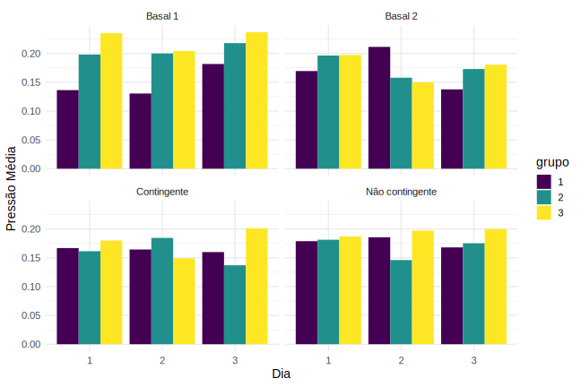
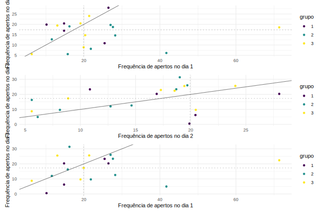
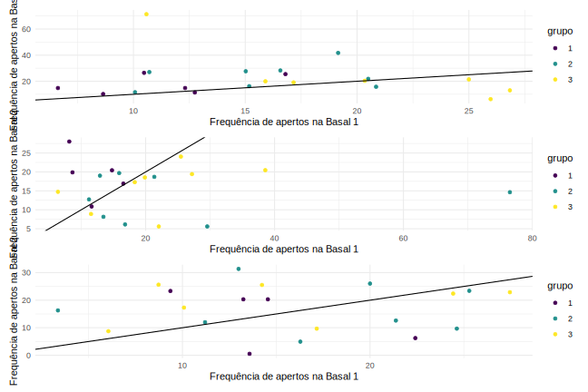

Capítulo 6 Análise descritiva
6.1 Grupo
Os participantes do estudo foram classificados em 3 grupos distintos, de acordo com suas idades. A influência dessa característica na pressão exercida é um dos fatores de possível interesse na análise. A Tabela 1 mostra a quantidade desbalanceada de bebês em cada categoria.
| Grupo | N | % |
|---|---|---|
| 1 mês | 6 | 27.27% |
| 2 meses | 8 | 36.36% |
| 3 meses | 8 | 36.36% |
| Total | 22 | 100.00% |
6.2 Pressão Média
Ao analisarmos algumas medidas resumos - média, mediana e desvio padrão - da variável Pressão, observa-se pela Tabela 2 que não há grande diferença entre as pressões médias e medianas quando agrupamos pelo Dia da sessão.
| Dia | Pressão Média | Desvio Padrão | Pressão Mediana |
|---|---|---|---|
| 1 | 0.182 | 0.116 | 0.162 |
| 2 | 0.172 | 0.125 | 0.147 |
| 3 | 0.181 | 0.121 | 0.162 |
Porém, o agrupamento por Grupo (Tabela 3) indica uma maior diferenciação nas medidas resumos do Grupo 3, cuja pressão média é superior as duas outras. Outro ponto interessante é o desvio padrão no Grupo muito menor do que os desvios nos demais Grupos, indicando uma menor variação na pressão dos bebês de 1 mês. Por fim, um aprofundamenta na visão por Condição (Tabela 4) indica que a pressão média nas condições Basal 1 e Não Contingente são mais altas, enquanto a mediana do Não Contingente destaca-se entre as condições.
| Grupo | Pressão Média | Desvio Padrão | Pressão Mediana |
|---|---|---|---|
| 1 | 0.167 | 0.093 | 0.152 |
| 2 | 0.173 | 0.105 | 0.157 |
| 3 | 0.191 | 0.149 | 0.162 |
| Condição | Pressão Média | Desvio Padrão | Pressão Mediana |
|---|---|---|---|
| basal1 | 0.198 | 0.162 | 0.152 |
| basal2 | 0.174 | 0.107 | 0.157 |
| contingente | 0.167 | 0.115 | 0.152 |
| não contingente | 0.179 | 0.102 | 0.167 |
Através do Gráfico 1 é possível perceber que, na Condição Basal 1, há uma relação direta da pressão média com a idade do bebê, pois conforme o mês do bebê aumenta, as pressões média de cada grupo vão se igualando. Além disso, as diferenças de pressão média diminuem ao longo dos dias.Já na Condição Basal 2, essa relação não se observa, chegando a se inverter no segundo dia.

Nas condições Contingente e Não Contingente, nas quais existe um estímulo visual, a pressão média é um pouco menor do que nas Basais e não parece existir relação entre a Pressão e a Grupo (idade), porque não observamos nenhum padrão de crescimento ou queda nas imagens. Isso pode indicar uma resposta parecida ao estímulo, independentemente da idade.
6.3 Pressão x Tempo
Ao compararmos a pressão média ao longo do tempo no primeiro Grupo (Gráfico x) temos que em ambas as condições analisadas a pressão média aumenta gradualmente conforme o tempo passa, atingindo os maiores valores no final das sessões. O comportamento esepecífico de cada Condição pode ser visto no Apêndica B (Gráfico B.1 e Gráfico B.2)
Diferentemente do Grupo 1, no Grupo 2 a Basal também apresenta crescimento gradual no início, com decaimento no final (Gráfico x). Esse comportamento pode indicar uma maior diferença entre idades na condição Basal (Gráfico B.3), mas não na Contingente que mantem-se constante ao longo do tempo (Gráfico B.4). Outro destaque é o fato da pressão média na condição Basal em relação a Condição com estímulo visual.
Assim como nos outros grupos, a pressão média na Condição Basal oscila mais que na Contingente (Gráfico x). Semelhança com o Grupo 2 observa-se que no início, tanto na Basal quanto na Contingente, há um aumento gradual da pressão média, com a pressão média da Basal sempre superior à da Contingente. O comportamento esepecífico de cada Condição pode ser visto no Apêndica B (Gráfico B.5 e Gráfico B.6)
6.4 Perfil dos participantes na Condição Contingente
O Grafico x representa a Pressão ao longo do Tempo dos indivíduos do Grupo 1 na Condição Contingente. Observa-se que o comportamento entre indivíduos de um mesmo grupo é heterogêneo
O mesmo ocorre quando analisamos a Pressão ao longo do Tempo dos indivíduos do Grupo 2, porém, nesse caso alguns bebês ativam mais o vídeo ao final da sessão, o que pode indicar que houve “aprendizado” do mecanismo do experimento. Além disso, o comportamento diferente não ocorre apenas entre bebês, mas também entre dias para o mesmo bebê
Por fim, para o Grupo 3 também não parece existir um padrão aparente para o comportamento ao longo dos dias. Alguns bebês, ativaram mais o vídeo no último dia, enquanto outros tiveram mais sucesso no primeiro dia do experimento.
6.5 Frequência de apertos
No geral, observamos no Gráfico x que para o Grupo 1 na Condião Basal 2 a frequência de apertos é menor no Dia 1 em comparação aos demais dias. Já o Grupo 2 possue uma distribuição dos valores próxima da reta, indicando que não parece existir uma alteração expressiva na frequência de apertos de um Dia para o outro nesse Grupo. Por fim, o Grupo 3 apresenta um aumento na frequência de apertos do Dia 3 em relação aos dias anteriores.
 Quando comparamos a Frequência de apertos nas Condições Basal 1 e Basal 2 (Gráfico x)
